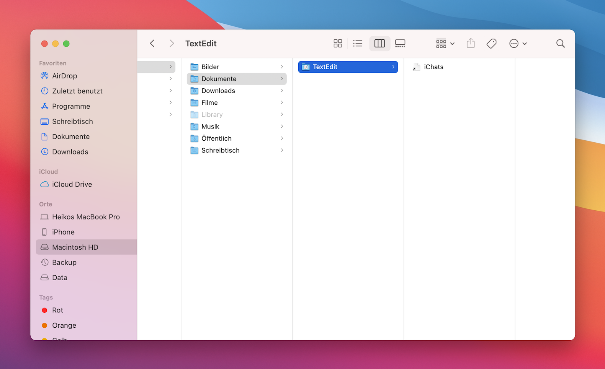
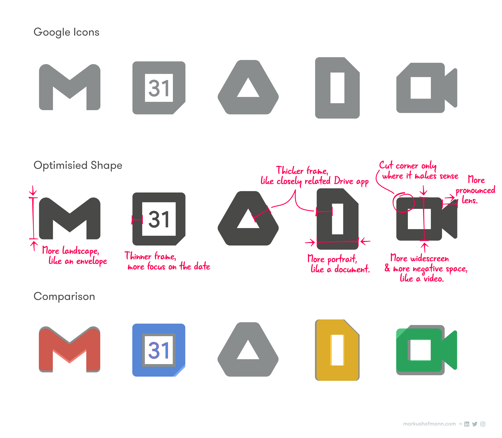
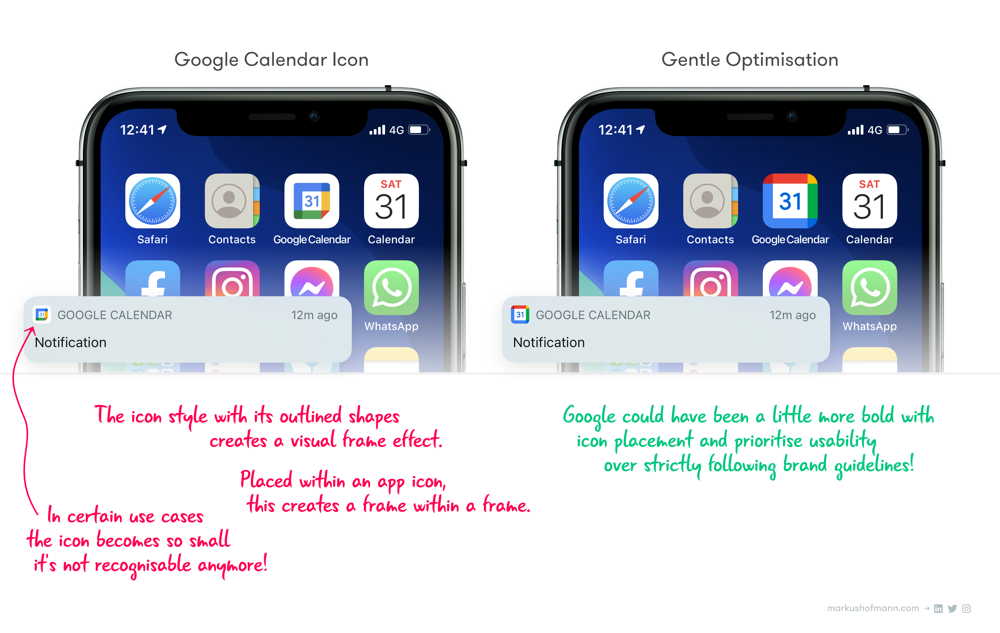
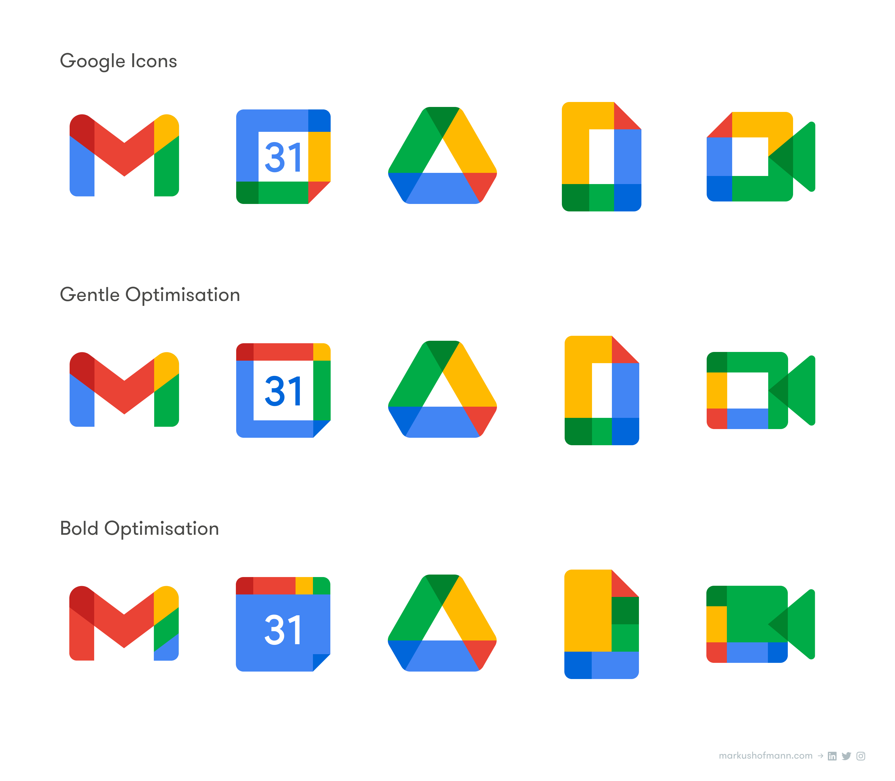
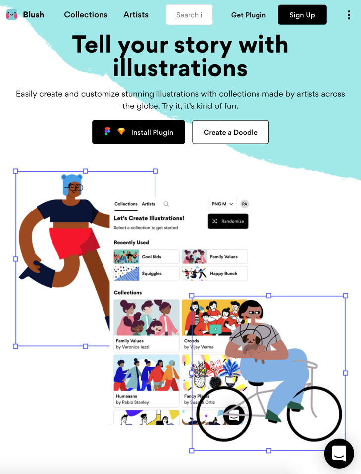
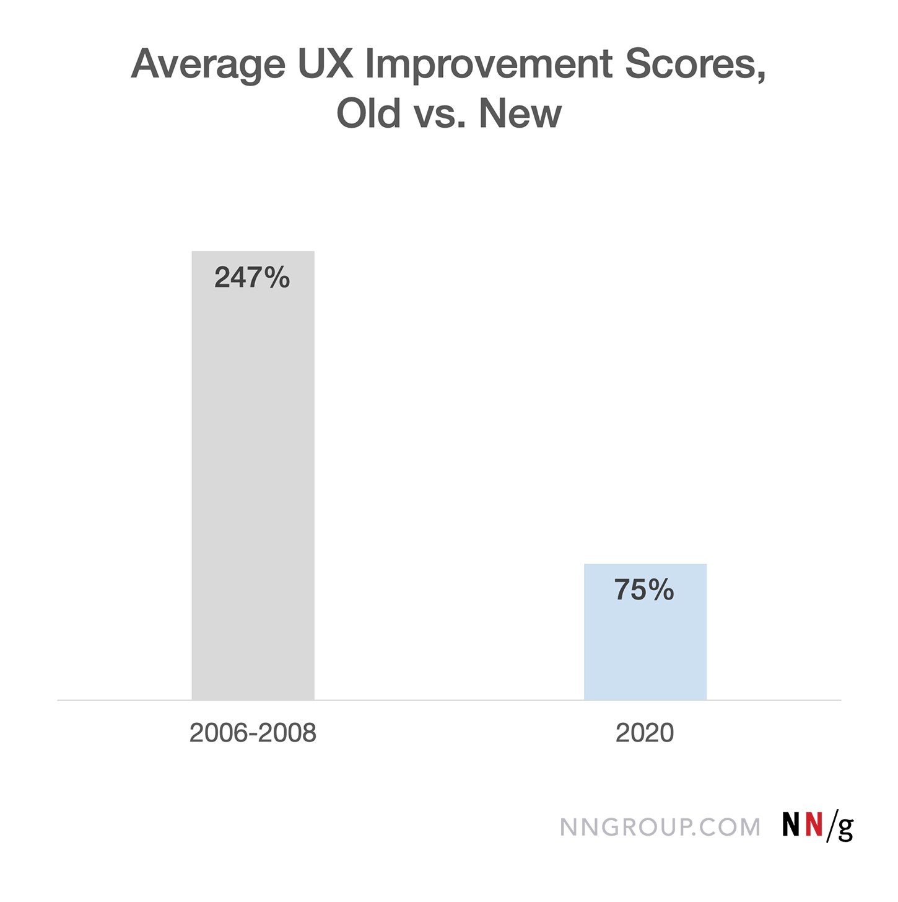

设计周刊 Design Weekly #33
Thu, Nov 12, 2020
🏷 设计案例
Tower App Desing on Big Sur
https://www.git-tower.com/blog/app-design-on-big-sur
文中案例解析了 macOS Big Sur 大刀阔斧的设计风格改变，以及产品 Tower Git 客户端如何应用这个风格的。

Google app logos Redesign
https://medium.com/design-bootcamp/why-googles-new-app-icons-are-pretty-bad-10f1ec40ab04
作者 Markus Hofmann 通过图标设计原则对 Google app logos 进行了一番分析，并给出了重新设计后的方案。你对谷歌图标有什么看法吗？欢迎留言讨论。



🏷 设计资源
Blush：Tell your story with illustrations
插画平台 Blush，又新增主题了~啧啧啧

🏷 设计文章
NN/g : UX对定性指标的影响逐渐减小
https://www.nngroup.com/articles/ux-gains-shrinking/
尼尔森·诺曼集团通过收集整理的案例和数据，对 2006 年以来的各种设计项目进行了回顾分析：用户体验对定量指标的影响趋于下降，这意味着 UX 在过去的 14 年中得到了长足发展。对于整个 UX 行业来说，将进入一个完善时期。在UX 总体体验越来越好，用户期望越来越高的大背景下，UX 的微小改进也是值得的。购买UX指标和ROI 报告。

🏷 设计新闻
Playstation 5的狂野设计内幕
https://www.fastcompany.com/90573026/inside-the-wild-design-of-the-playstation-5
PS5 作为今年最具争议的工业设计之一，一起听听首席设计师 Yujin Morusawa 使用 PS5 创造的体验。